紫云玄清
紫云玄清是一家独特的以道教为主题的养身度假酒店，位于中国的道教胜地－茅山。道的概念和理论在中国文化长河中有了近4700年的历史，是中国本土文化的精髓。紫云玄清希望通过自身的品牌表达，以空间，视觉等形式阐述道的文化内涵，以此弘扬道的精神，即回归自然，沉心自清的自我修炼。
通过大量的理论分析，我们将道的核心进行罗列，其自我修行，沉心自清的概念与水的特质十分贴近，道德经中老子就用水来诠释道，认为水自居下流，藏污纳垢，包容一切的特性与道家「谦下养生」的理论是最为接近的。设计摒弃了传统「道」的表达形式，巧妙的以「水」这一人们最为熟知的元素作为媒介，并通过不同的表达形式，阐述道与水的联系，从而深入浅出的引出道的核心，即上善若水，天人合一，提高自我修行的过程。
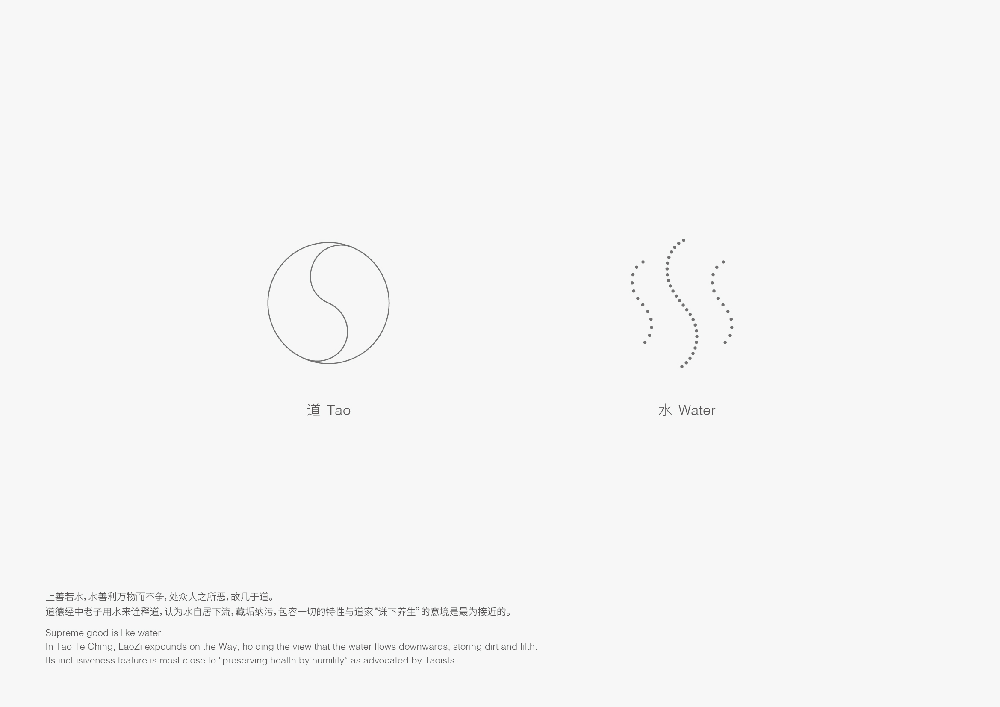

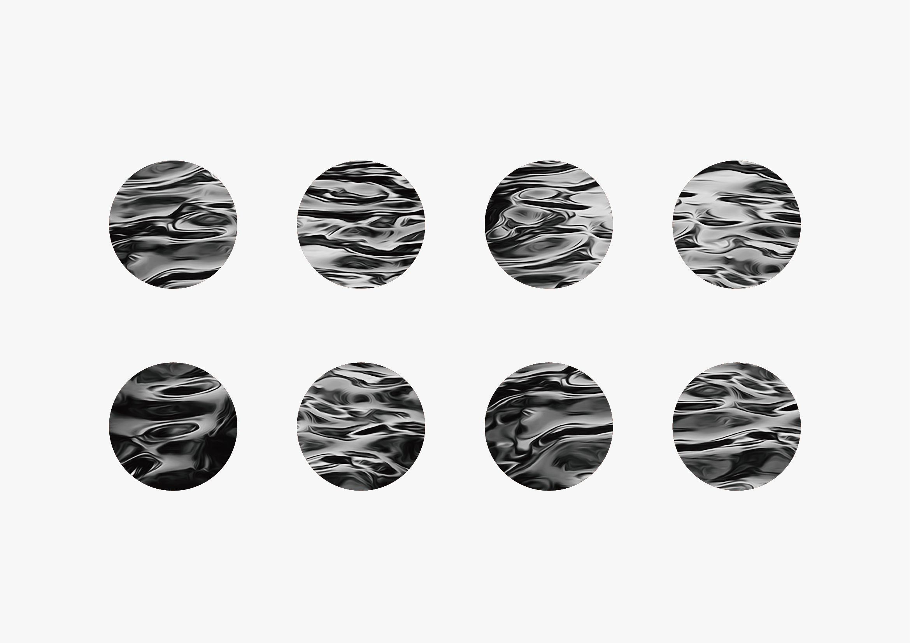
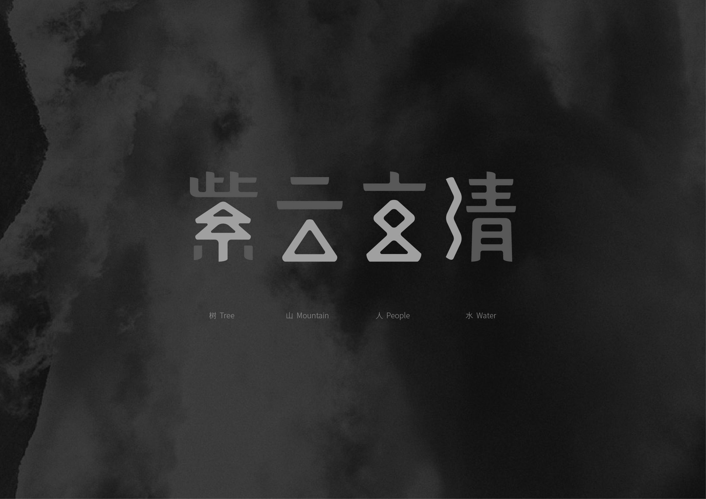
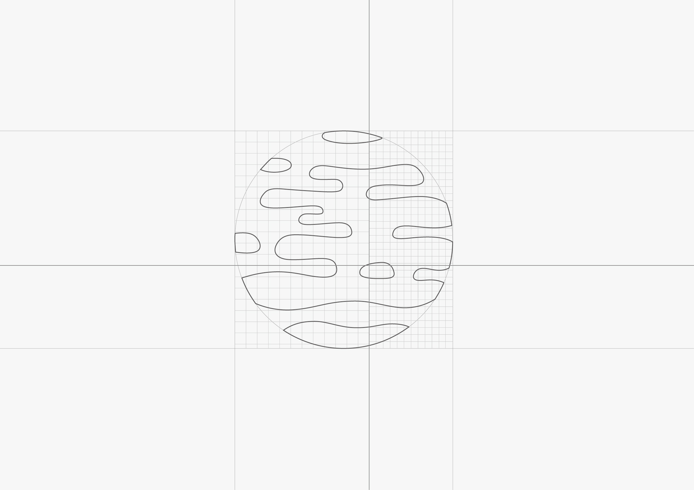
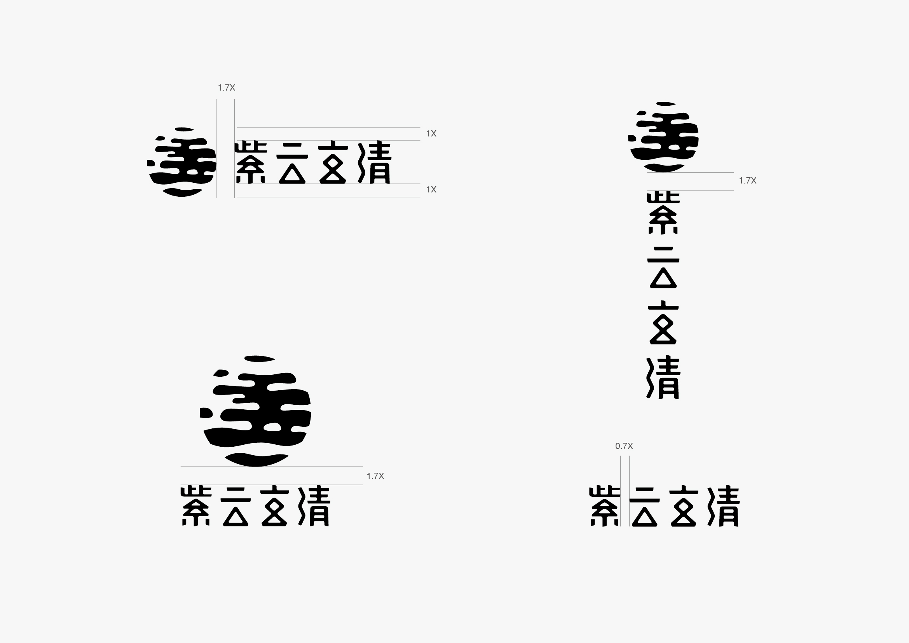
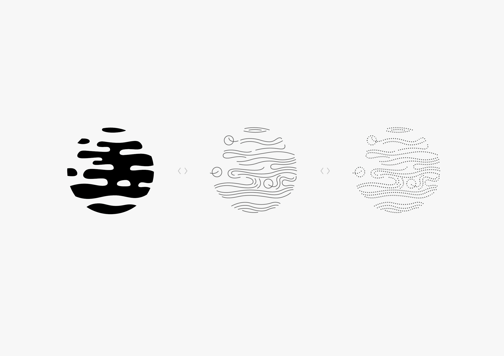
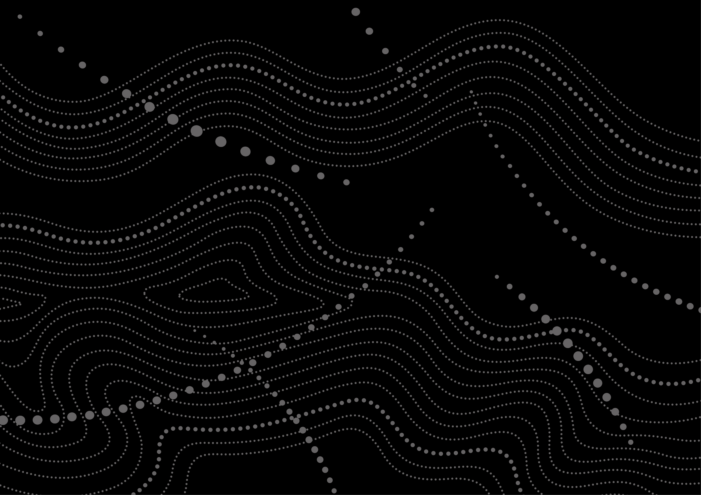
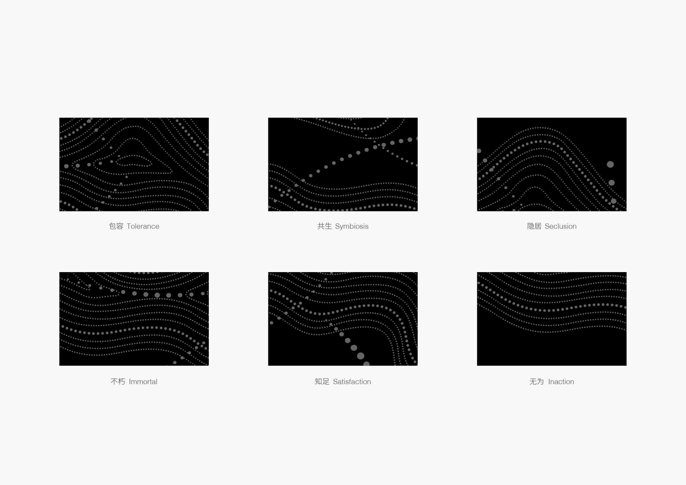
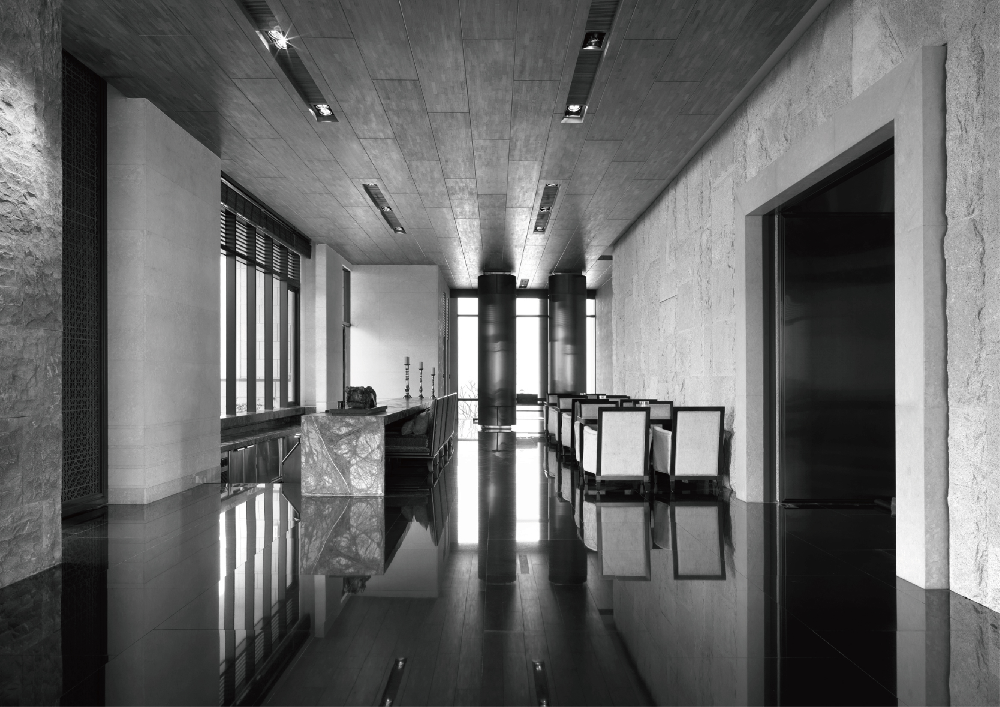
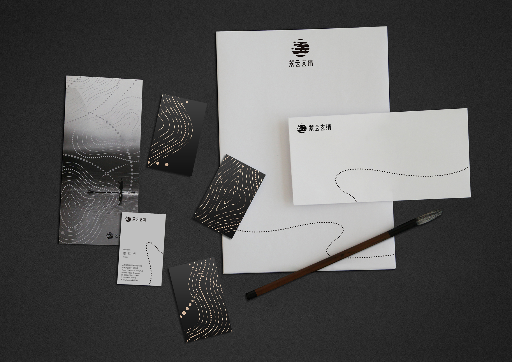
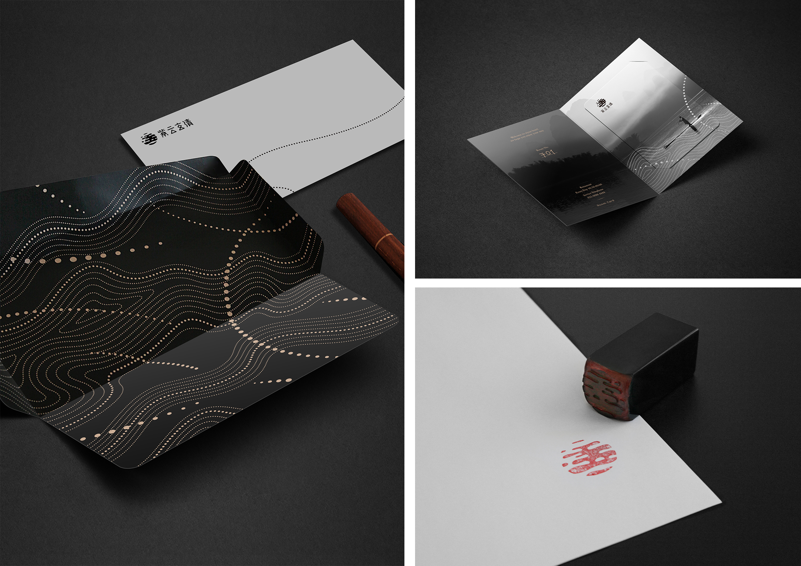
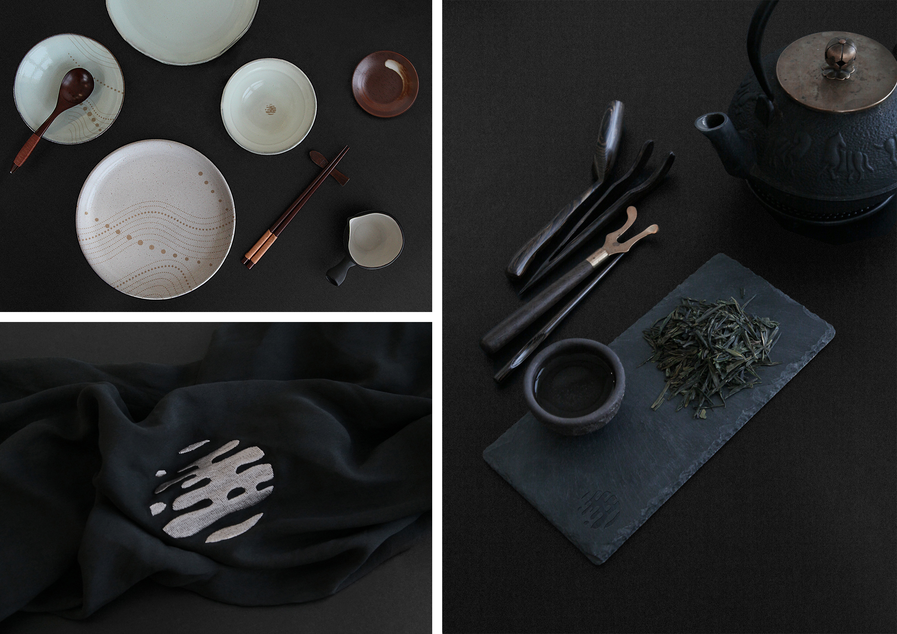